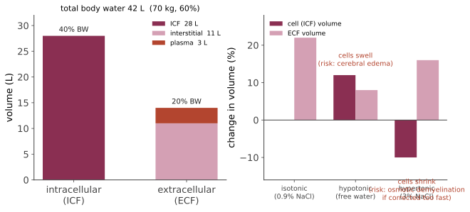

本页目录
正常 III · 生理学核心：稳态、体液与膜
生理学的全部内容可以压缩成一句话：身体在维持一组受调变量恒定，方法是负反馈。本页立起这套框架的三根柱子——控制论骨架、体液分区、跨膜转运——后面每一个系统都是它的特例。
1. 稳态作为控制系统
标准回路：受调变量 → 感受器 → 整合中枢（设定点）→ 效应器 → 反作用于变量。
其中 \(P(t)\) 是扰动，\(k\) 是回路增益。稳态误差 \(\approx P/k\)：增益越高，偏离越小，但相位滞后大的高增益系统会振荡（🔗 反馈的艺术站 :8090 讲的正是这件事——生理系统的振荡如潮式呼吸、周期性血糖波动，本质是控制问题而非"器官坏了"）。
生理学最重要的一条推论："检验值正常"不等于"系统正常"。血钙正常可能是甲状旁腺激素代偿性升高的结果（此时骨在被吃掉）；血糖正常可能是胰岛素高出数倍换来的（代偿期糖尿病前期，第 20 页）。所以临床上常同时测"被调变量 + 调节激素"——这一对读数才能定位病变在哪一层。
正反馈虽少但关键：分娩（催产素）、凝血级联、动作电位的钠通道开放、排卵前 LH 峰。病理性正反馈是灾难的通用形式：休克（低灌注→酸中毒→心肌抑制→更低灌注）、心衰的神经内分泌激活、筋膜室综合征。看到临床上的"迅速恶化"，先找有没有正反馈环。
2. 体液分区：数字要记住
成人男性总体水 ≈ 体重的 60%（女性约 50%，肥胖者更低——脂肪含水少）。60-40-20 法则：

- 总体水 60%（70 kg → 42 L）
- 细胞内液 ICF 40%（28 L）——主要阳离子 K⁺
- 细胞外液 ECF 20%（14 L）——主要阳离子 Na⁺；其中组织间液 3/4（11 L）、血浆 1/4（3 L）
为什么这些数字有用：所有补液与电解质计算都基于它们。例如输入 1 L 生理盐水（等张）→ 全部留在 ECF，仅约 1/4 进入血管内（所以晶体液扩容效率约 25%）；输入 1 L 5% 葡萄糖（葡萄糖被代谢后等价于纯水）→ 按 ICF:ECF = 2:1 分布，只有约 1/12 留在血管内。
渗透压与张力的区别（一个常见混淆）：渗透压（osmolarity）算的是所有溶质；张力（tonicity）只算不能自由跨膜的有效溶质。尿素能自由跨膜 → 对渗透压有贡献但不产生张力。血浆渗透压估算：
渗透压间隙（实测 − 计算）> 10 提示存在未测定的渗透活性物质（甲醇、乙二醇、乙醇）——这是急诊中毒诊断的一个真实工具。
血钠的正确读法：[Na⁺] 反映的是水的状态，不是钠的总量。低钠血症绝大多数是"水太多"，不是"钠太少"；所以处理低钠先判断容量状态与尿渗透压，而不是直接补钠。
3. 跨膜转运：四类机制
| 机制 | 驱动力 | 例 |
|---|---|---|
| 单纯扩散 | 浓度梯度 | O₂、CO₂、脂溶性药物（第 13 页的吸收基础） |
| 易化扩散 | 浓度梯度 + 载体/通道 | GLUT 转运葡萄糖、水通道 aquaporin |
| 原发性主动转运 | 直接水解 ATP | Na⁺/K⁺-ATP 酶（3 Na⁺ 出 : 2 K⁺ 入）、H⁺/K⁺-ATP 酶（胃壁细胞，PPI 的靶点）、Ca²⁺-ATP 酶 |
| 继发性主动转运 | 借用已建立的离子梯度 | SGLT（钠-葡萄糖同向，SGLT2 抑制剂的靶点）、NKCC2（呋塞米靶点）、NCC（噻嗪靶点）、Na⁺/H⁺ 交换 |
Na⁺/K⁺-ATP 酶是整个生理学的中央电源：它建立的钠梯度被继发性转运反复"借用"。它消耗基础代谢的 20–30%，这也是缺氧时细胞迅速肿胀的原因——ATP 耗竭 → 泵停 → Na⁺ 内流 → 水随入（第 05 页细胞损伤的第一步）。
地高辛的作用机制正在此：抑制 Na⁺/K⁺-ATP 酶 → 胞内 Na⁺ 升高 → Na⁺/Ca²⁺ 交换减弱 → 胞内 Ca²⁺ 升高 → 正性肌力。同时解释了它的毒性与低钾的关系（K⁺ 与地高辛竞争同一结合位点，低钾使地高辛毒性放大）。
4. 膜电位：Nernst 与 Goldman
单一离子的平衡电位（Nernst，37 °C）：
典型值：\(E_K \approx -90\) mV，\(E_{Na} \approx +60\) mV，\(E_{Ca} \approx +120\) mV，\(E_{Cl} \approx -70\) mV。
静息膜电位由各离子电导加权（Goldman 方程）：
静息时 \(P_K \gg P_{Na}\)，故 \(V_m\)（−70 至 −90 mV）接近 \(E_K\)。
临床折射：血钾变化直接移动 \(E_K\)，因而直接影响可兴奋组织。高钾 → \(E_K\) 上移 → 静息电位去极化 → 钠通道失活 → 传导减慢、心电图 T 波高尖 → QRS 增宽 → 正弦波 → 停搏。这是内科最紧急的电解质异常，机制完全可以从 Nernst 方程读出来。低钾则相反（超极化、易触发折返与室性心律失常，且加重地高辛毒性）。
急救处理的三层逻辑也直接对应：① 钙剂（稳定心肌膜阈电位，不降钾）；② 胰岛素+葡萄糖、β₂ 激动剂、碳酸氢钠（把钾赶进细胞内，暂时）；③ 利尿剂、离子交换树脂、透析（真正排出）。
5. 物质在体内的流动：三条通用定律
Fick 扩散定律（气体交换、药物透膜、透析都用它）：
通量正比于面积 \(A\) 与梯度 \(\Delta P\)，反比于厚度 \(d\)。肺纤维化 → \(d\) 增大；肺气肿 → \(A\) 减小；两者都降低弥散能力（第 18 页）。
Starling 力（跨毛细血管液体流动，第 07 页水肿的基础）：
净滤过 = 静水压差 − 有效胶体渗透压差。四种水肿机制正对应四个变量：\(P_c\) ↑（心衰、静脉阻塞）、\(\pi_c\) ↓（肝病、肾病综合征、营养不良）、\(K_f\)/\(\sigma\) ↑（炎症使内皮渗漏）、淋巴回流受阻（\(P_i\) ↑）。
清除率（clearance）的通用定义——同时是肾功能与药代的核心（第 13、19 页）：
"清除率 = 单位时间内被完全清空的血浆体积"——这一个概念统一了肾脏生理与药代动力学。
6. 自主神经：所有系统调节的公共层
| 交感 | 副交感 | |
|---|---|---|
| 节前递质 | ACh（烟碱受体 N） | ACh（N） |
| 节后递质 | NE（肾上腺素能受体）；汗腺例外用 ACh | ACh（毒蕈碱受体 M） |
| 节前/节后长度 | 短前长后 | 长前短后 |
| 起源 | 胸腰 T1–L2 | 脑干（Ⅲ、Ⅶ、Ⅸ、Ⅹ）与 S2–S4 |
受体亚型（药理学的骨架，第 15–16 页反复调用）：α₁ 血管收缩、瞳孔散大、膀胱颈收缩；α₂ 突触前负反馈（可乐定的降压机制）；β₁ 心率心肌收缩力↑、肾素释放；β₂ 支气管与血管平滑肌舒张、肝糖原分解；β₃ 脂解与膀胱逼尿肌松弛；M₂ 心脏（减慢）；M₃ 腺体分泌、平滑肌收缩。
记住一条："β₁ 心、β₂ 肺"——所以选择性 β₁ 阻滞剂用于心脏病而尽量避免诱发支气管痉挛，但大剂量下选择性丢失。
参考与更新
- 最后审查：2026-08-02。 本节来源用于核验稳态、体液分区、膜转运与水盐平衡的基础概念；具体患者的电解质解释需结合检验方法和临床情境。
- Physiology, Homeostasis — NLM/NIH Bookshelf：稳态与反馈调节。
- Physiology, Body Fluids — NLM/NIH Bookshelf：体液分区、渗透压与容量。
- Physiology, Membrane — NLM/NIH Bookshelf：膜结构、转运和电生理基础。
- Physiology, Water Balance — NLM/NIH Bookshelf：水摄入、排出与调节。
下一页：整合生理——把循环、呼吸、肾三个系统作为一个耦合的氧输送与酸碱调控系统来看。